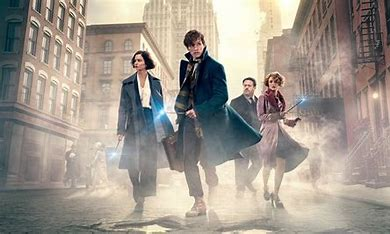
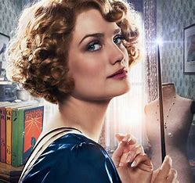
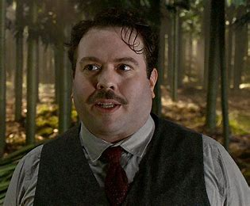
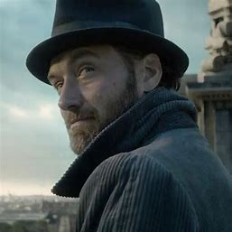
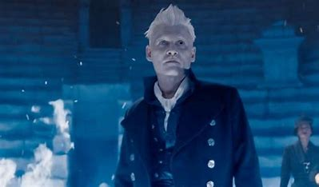

Animales Fantásticos y dónde encontrarlos?

Animales fantásticos es una trilogía de películas escrita por la escritora J.K
Rogling. Es una trilogía que pertenece al mundo fantástico de Harry Potter, ya que todo ocurre
unos 70 años antes de que naciera el protagonista Harry Potter, es decir, con sus antecedentes.
la película se basa en derrocar al mago mas peligroso y tenebroso de todos los tiempos, Gellert
Grindelwold de la mano del protagonista Newt Scamander, un brujo muy peculiar y sus amigos; el
muggle Jacob Kowalsky, Tina y Quenne Goldstein.
Animales Fantásticos y los crímenes de Grindelwold

Esta es la segunda película de la trilogía, en esta película se cuenta la
historia de los grandes crímenes de Grindelwold, es una película muy buena que suele
dejar lagunas a los televidentes para luego responderlas con la siguiente, Los secretos
de Dumbledor. No quiero abordar mucho y lo más que puedo hacer es invitarte a ver esta
maravillosa película.
Animales Fantásticos y los secretos de Dumbledore

Animales Fantásticos y los secretos de Grindelwold es la última
película de la trilogía y una de las más importantes, ya que en esta película se
explica muchp sobre lo acontecido en el mundo mágico, se habla sobre la relación
de este mago tan tenebroso y el profesor Dumbledor, uno de los personajes más
importantes, tanto de la trilogía, como de la saga Harry Potter. Para mucho de
los fanáticos es una de las mejores películas de este mundo, pero no voy a
abordar mucho el tema para no dar spoilers a quienes no la han visto aún.
Personajes principales
Newt Scamander

Porpentina Goldstein (Tina)

Quenne Goldstein

Jacob Kowalsky

Albus Dumbledore

Gellert Grindelwold
